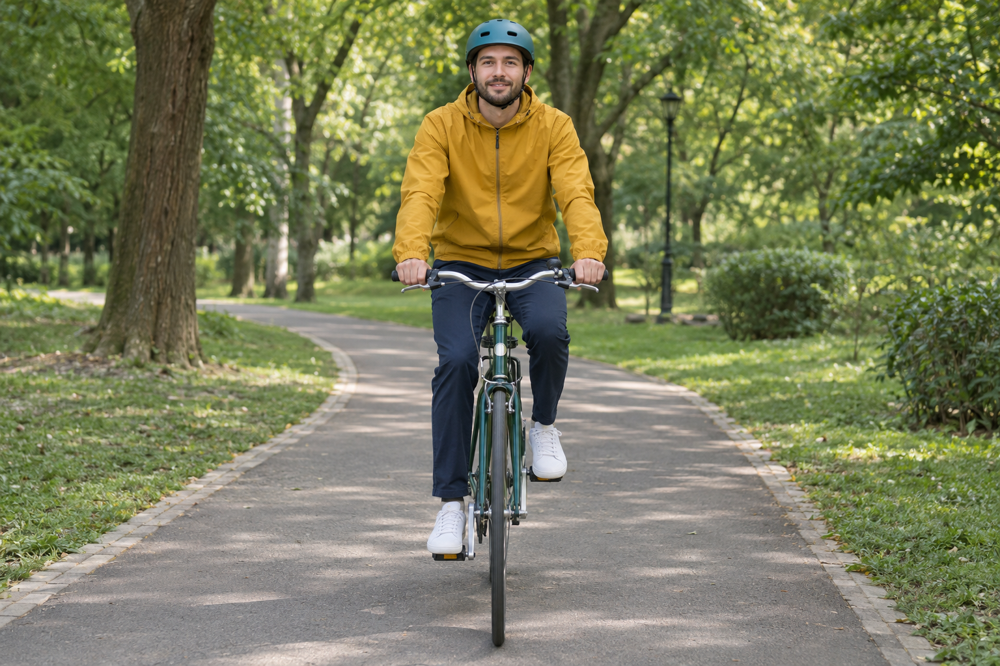

This is my resume page
As an avid park cyclist, I have developed excellent time management and dedication skills through consistent training and exploration of various cycling trails. My passion for cycling in parks reflects my commitment to personal health and environmental awareness. I am experienced in maintaining bicycles, planning cycling routes, and adapting to different weather conditions. Cycling has taught me the importance of perseverance, as pushing uphill and long-distance rides require determination. These qualities translate well to professional endeavors, making me a reliable and goal-oriented individual who enjoys outdoor challenges and personal growth.
